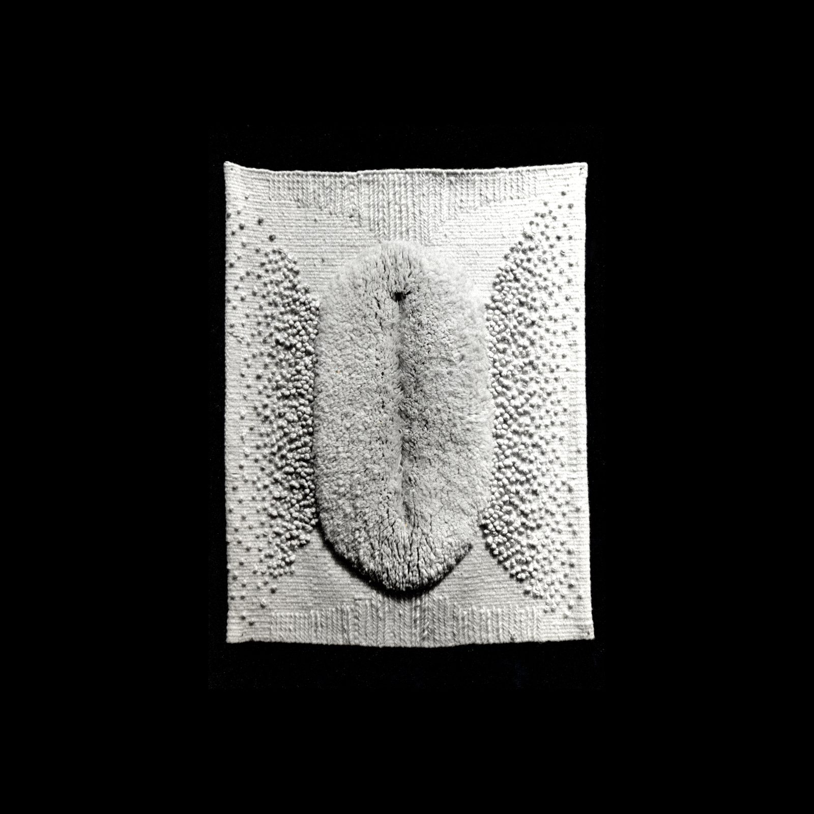
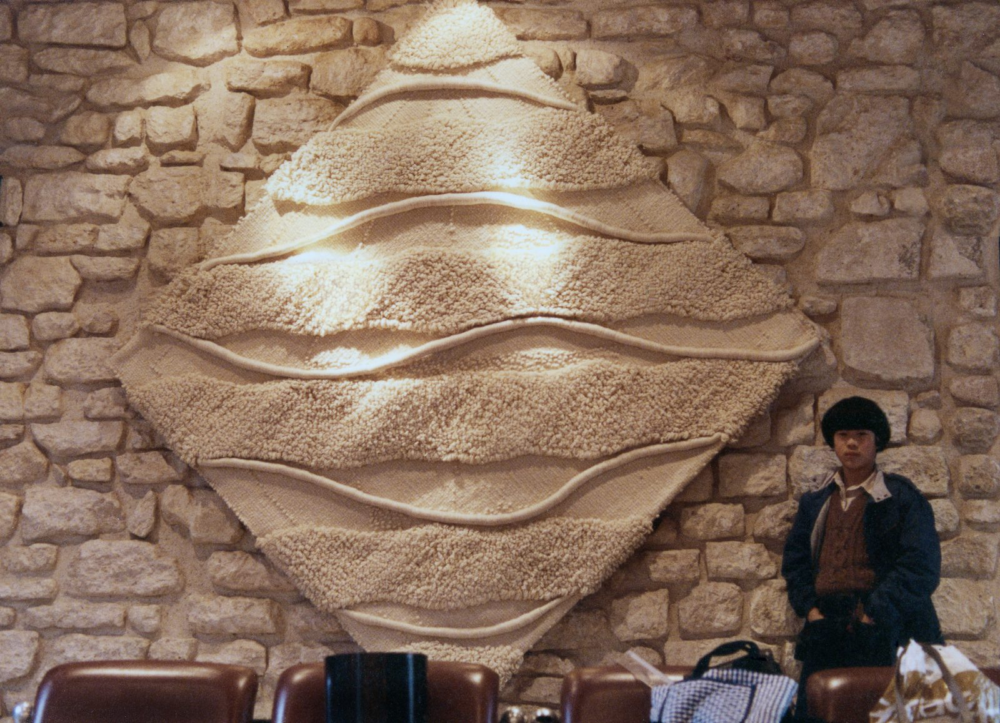
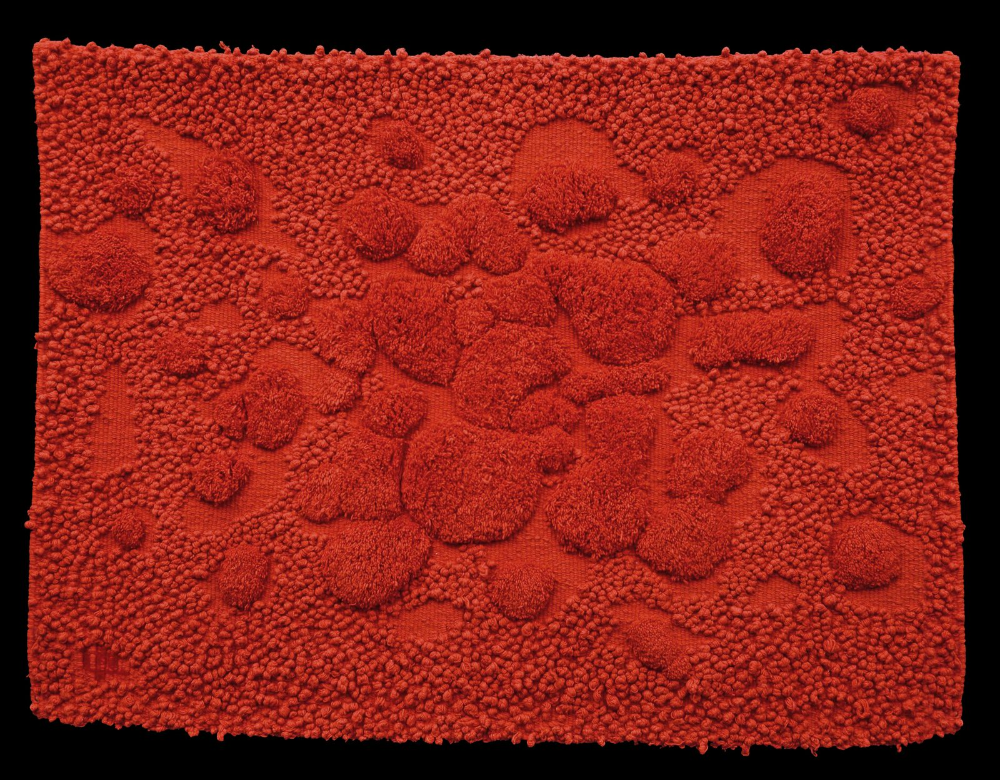
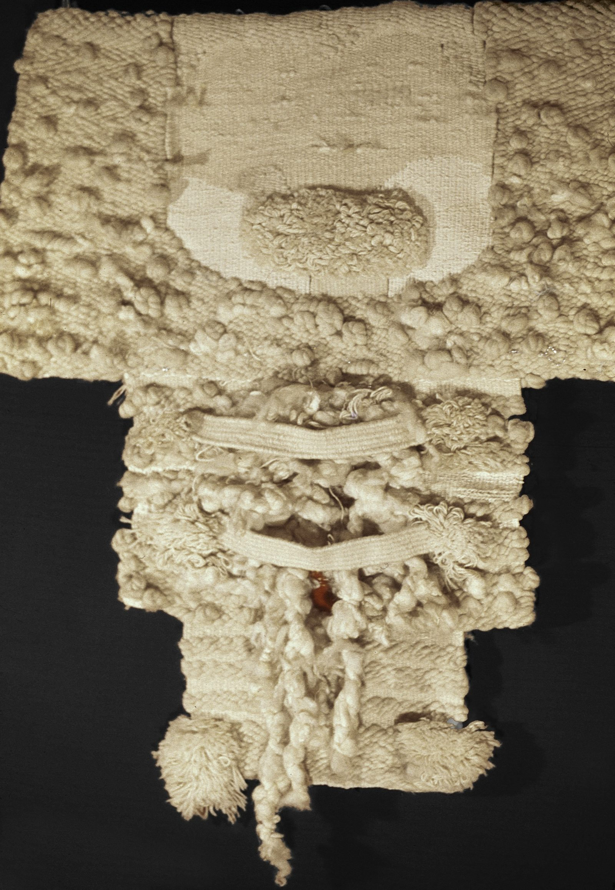
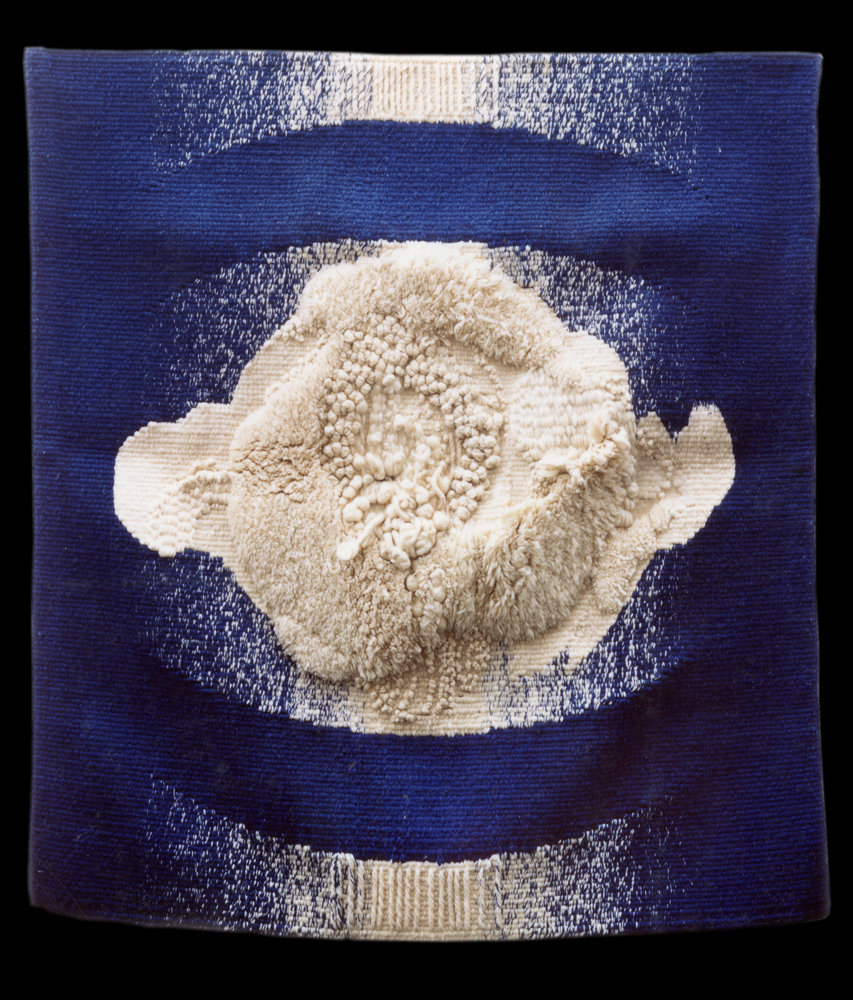
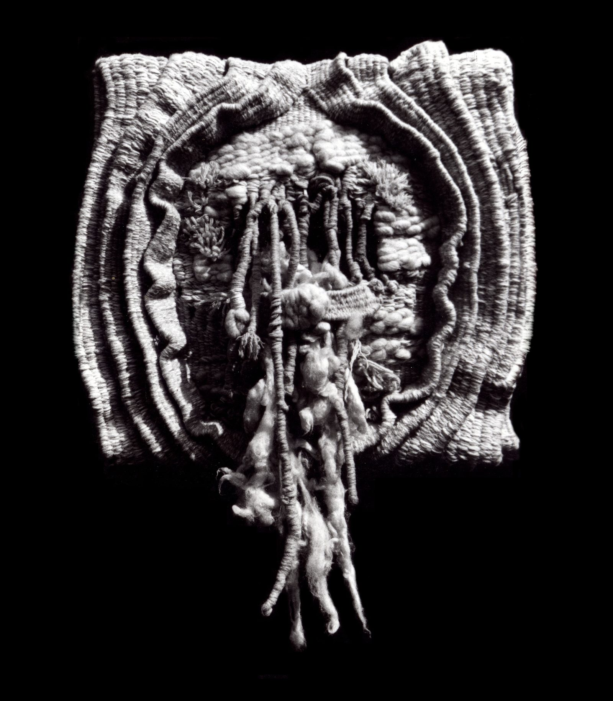

1972 — 1979
Période 1970
« Je pense qu'il ne faut pas que la beauté de la matière soit tuée par l'intention trop forte de l'auteur » Isao Nariyoshi — 「作家の意図が強すぎて、素材の持つ美しさを殺してしまってはいけないと考えている」成良 功
Expositions collectives
1973 Festival de Juan-les-Pins, Cannes, France
1974 Salon d'automne, Grand Palais, Paris
1975 Art Contemporain de France et d'Europe, New-York, U.S.A — Exposition d'Art Contemporain de Villejuif, France
1977 Festival Japon de Chatenay Malabris, France
1978 Exposition Groupe 13, Galerie Ojima, Paris
Œuvres

1971 « MATERNEL » — laine, 115 × 88 cm — collection de l'artiste
「母性」純毛 115 x 88 cm 1971 作家蔵

1974 « VAGUES » — laine, 240 × 240 cm — collection de l'artiste
「波」純毛 240 x 240 cm 1975 作家蔵

1972 « MARÉCAGE ROUGE » — laine, 130 × 180 cm — collection de l'artiste
「赤い湿地」純毛 130 x 180 cm 1972 作家蔵

1973 « GENSHI » — laine, 170 × 120 cm — collection particulière
「原始」純毛 170 x 120 cm 1973 個人蔵

1975 « BIG BANG » — laine, 150 × 130 cm — collection particulière
「ビグバング」純毛 150 x 130 cm 1975 個人蔵

1979 « TAÏKO » — laine et Ginshi, 170 × 130 cm — collection particulière
「太古」純毛、銀糸 170 x 130 cm 1979 作家蔵

1978 « MARÉCAGE OCRE » — laine, 140 × 120 cm — collection de l'artiste
「オークル色の湿地」純毛 120 x 170 cm 1978 作家蔵